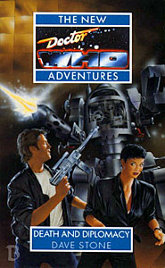

|
Death and Diplomacy
|
BASIC PLOT DOCTOR COMPANIONS And introducing Jason Kane. MATERIALISATION CIRCUIT PREPARATORY READING CONTINUITY REFERENCES Pg 12 "Sometimes you just wish it really was all true, true love and hearts and flowers and knights in shining armour" Sanctuary. Pg 18 "That particular invitation had been to an interspecieal diplomatic gathering on Luna in 1609 - by the Gregorian calendar - and it had resulted in nothing but trouble." The Empire of Glass. But see Continuity Cock-ups Pg 19 "Maybe Alistair had the right idea with his prana and Nirvana - or was that the popular beat combo Ace used to like?" The Brigadier (The Web of Fear onwards) and Ace (Dragonfire et al). Pg 23 "'WE HAVE BEEN WATCHING YOU.' 'Not recently, I trust,' said the Time Lord known as the Doctor. 'I thought I'd sorted out the last problem of that kind several subjective years ago.' Conundrum. Pg 57 "The truck was driven by a large a furry ursine humanoid that reminded Benny of the Reklonian she had one met, some time before, in a somewhat diminutive, slightly bizarre and on the whole rather silly set of supplementary dimensions." Sky Pirates! "In this timeframe - save for the very highest levels of Earth government and the classified activities of UNIT - human contact with alien races had been practically nonexistent." UNIT first appeared in The Invasion. Pg 60 "Then she turned, in an alert crouch, calling on the mindless mind-set she had learnt when drafted briefly into Earth Force Academy during the Dalek Wars" Love and War. You probably know who the Daleks are. Pg 68 "Sergeant, take a man around the rear!" A memorable line from The Highlanders. Pg 119 "She realized, later, that she was confusing a culture based upon military lines with that of a truly ferocious basic species like the Daleks" Again, you probably know who they are. Pg 124 "'This is the Daleks we're talking about?Seriously clunky exo-support, limited vocabulary, can't go down stairs? I mean they can just about have a pop at some backwater little planet like Earth, from what I've heard, but they're total jokes.' 'Those total jokes killed my mother,' Benny said. 'Will kill my mother. First my father, then my mother. I saw it. I was very small.'" Benny's backstory from Love and War, seen in flashback in Parasite and with a resolution to come in Return of the Living Dad. Pg 125 "She told him of her several even more distinguished archaeological expeditions, ending up on Heaven, the mass-grave planet that had been founded after the Earth-Draconian wars." Pg 135 "When she had first encountered the mechanical technology here she had been remined of the first time she and Chris Cwej had travelled with the Doctor, when they had found themselves stranded ina System with its own different and highly ridiculous physical laws." Sky Pirates!
Pg 147 "I mean, my mother was killed by Dalek plasma strafing, but my father was long-since gone." Love and War.
Pg 175 "Something reared up before her, slimy and fungoid and humanoid in appearance - and for a heart-stopping instant her mind sideslipped and she was back on Heaven, years before, coming face to face with someone infested by a detonating Hoothi spore." Love and War.
Pg 201 "I went down that road a little in what you might call an immediately previous life. Grabbing people by the hand and forcing them to press the buttons." The sixth Doctor.
Pg 203 "She had seen battlefields before, from the 1914 Somme to the 2697 Rigel Wastes" Toy Soldiers.
Pg 229 "She remembered Ace during the several times when she had fallen for some faker, only to find subsequently that he regarded her as just a quick and easy shag." Too many instances to mention.
Pg 234 "It seems to be scavanged from acorss the entire galaxy: Cyberman cybernetics, Sontaran living-crystal technology - I think I even saw several items from Earth." The Cybermen first appeared in The Tenth Planet, while the Sontarans first appeared in The Time Warrior.
Pg 278 "The book was The All-Consuming Fire by a 'Dr John Watson' in a limited, hand-printed edition she had found in the unkempt TARDIS library that seemed to go on forever." All-Consuming Fire.
"She really hoped the book wasn't some secondary result int he Dctor's and benny's adventures in the Land of Fiction." Conundrum.
OLD FRIENDS AND OLD ENEMIES NEW FRIENDS AND NEW ENEMIES Makar the Scout.
CONTINUITY COCK-UPS PLUGGING THE HOLES [Fan-wank theorizing of how to fix continuity cock-ups] FEATURED ALIEN RACES The Dakhaari are olive-green-skinned with slitted ears.
Pg 9 Fupi, herbivorous herds of Jaris.
Pg 11 A cross between a friesian cow and a three-toed sloth.
Pg 25 A Medusa-like creature with vipers sprouting from an obloidular body.
Hammerhead, who has slavering jaws.
A red-faced humanoid with elongated rabbit-like ears.
Pg 36 A six-armed arachnid from Glomi IV.
A Darian septilateral gestalt made up of six sacs full of pus and a remote interfacing node.
Pg 57 A large and furry ursine.
Pg 60 Skraks have three eyes, small ragged and furry, half the size of a cat but with similar proportions.
The cops are canines.
Pg 69 Hydraulic bipedal machines with torsos of pistons and gears, simian arms, one ending in a claw, the other with a blaster. (Seen on the front cover.)
Pg 92 A massive, pale and gelid-fleshy insectoid.
Pg 143 A flourescent yellow humanoid with displaced ears.
Pg 175 A Walking Puffball, slimy and fungoid.
Pg 190 Four-winged birds.
Pg 219 Serving automata that roll along on spherical rubber bearings.
Pgs 243/259 The Otherlings, pale creatures of teeth and eyes and claws in a self-enclosed temporal loop.
FEATURED LOCATIONS Pg 9 Jaris.
Pg 123 Jason was transported from 1996 about 15 years earlier and there's no evidence of time travel, so it's around 2011. AHistory makes a good case for placing this before Benny and Jason's 2010 wedding.
Pg 80 Jason's ship.
Pg 137 Moriel.
Pg 143 Makrath.
Pg 163 The Nadir Star.
Pg 167 Kalas.
IN SUMMARY - Robert Smith? |
|
 |